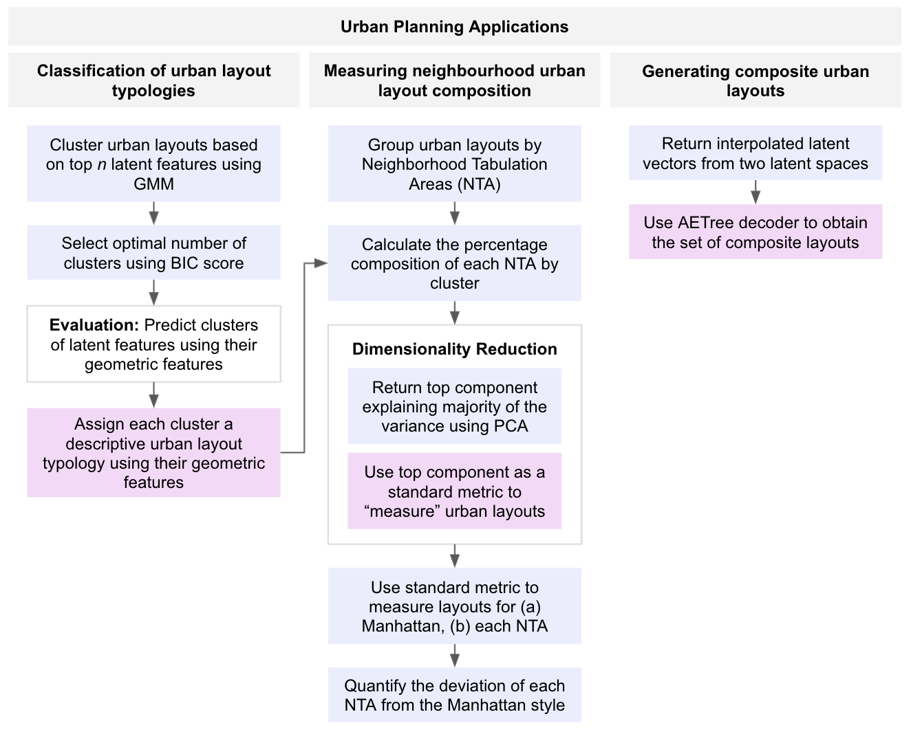
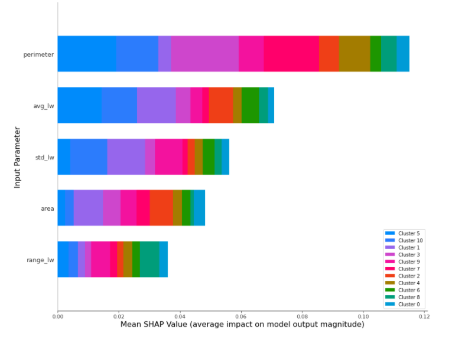
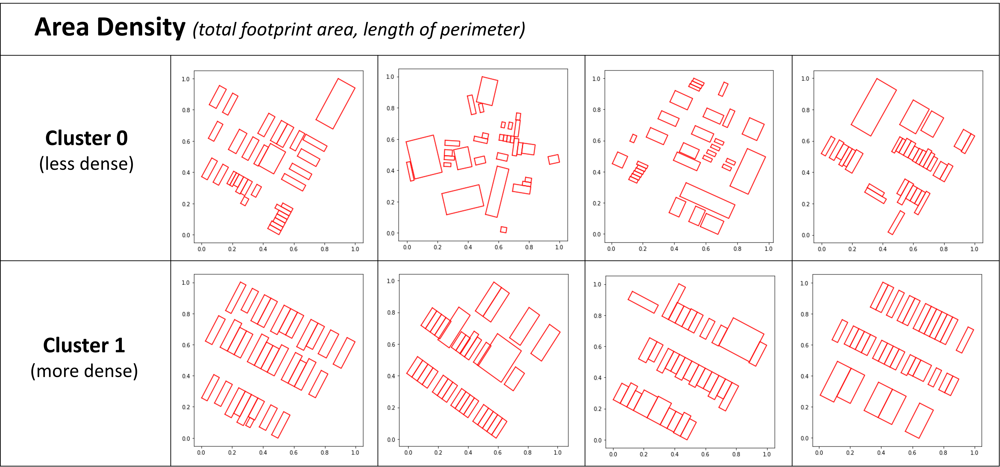
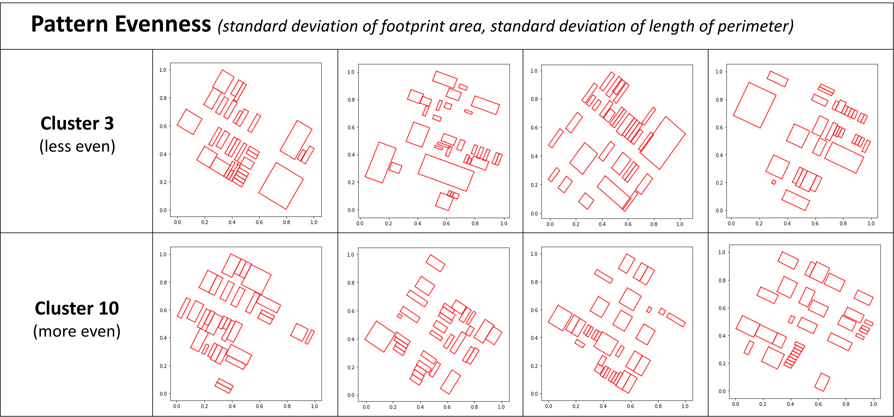
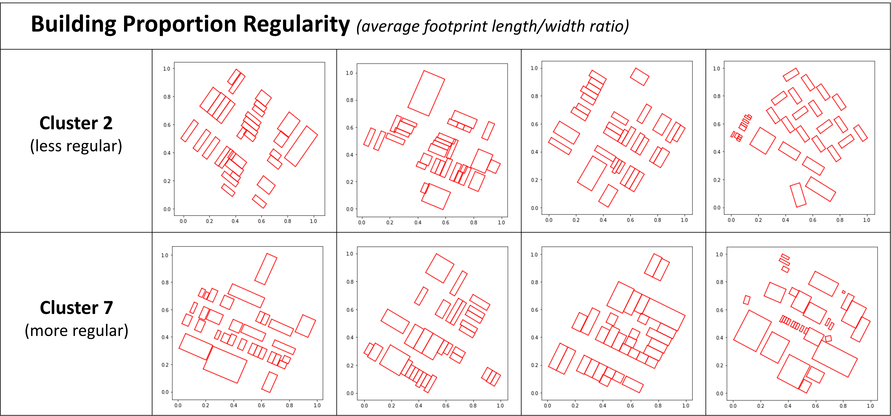

Overview

Classifying Urban Typologies
- Clustering of Latent Space using Gaussian Mixture Model (GMM). 512 latent features are compressed to 50 principal components, explaining 68.8% of the dataset variance. GMM was used to cluster the principal components.
- Measuring Feature Contributions using Shapley Values. Shapley Additive exPlanations (SHAP), was used to determine the contribution of each geometric feature and explain the output of the machine learning models.

- Geometry Statistics by Latent Space Clusters. Summary statistics of the top contributing geometric features were used to identify and profile distinct clusters.



Measuring Neighborhood Layouts
- Calculating Manhattan’s Urban Profile. By calculating the percentage composition of the 11 urban layout typologies, we are able to define an overall baseline for Manhattan’s urban profile.
- Measuring Neighborhood Urban Profile. Similarly, we can calculate the urban profile for each Manhattan Neighborhood Tabulation Area (NTA) to understand their unique patterns.
- Constructing Standard Metric for Urban Layout Composition. We derive a standard metric for measuring the neighborhood urban layout composition by reducing the multi-dimensional neighborhood profile.
- Using this standard metric, urban planners can evaluate how new urban layouts design change the neighborhood profile, relative to city baselines.

Our neighborhood profile analysis shows that Stuyvesant Town-Cooper Village (left) deviates greatest from the Manhattan urban profile, while the Upper West Side (right) is most similar.
Explore our Manhattan neighborhood analysis in the interactive web application.
Generating Composite Layouts
- Blending urban layouts. By decoding the linearly interpolated values of two latent subspaces, we are able to generate realistic urban layouts that resemble two dissimilar layouts.
- Urban planners can use this tool to rapidly generate new layouts that are contextually sensitive to the surrounding urban typology.